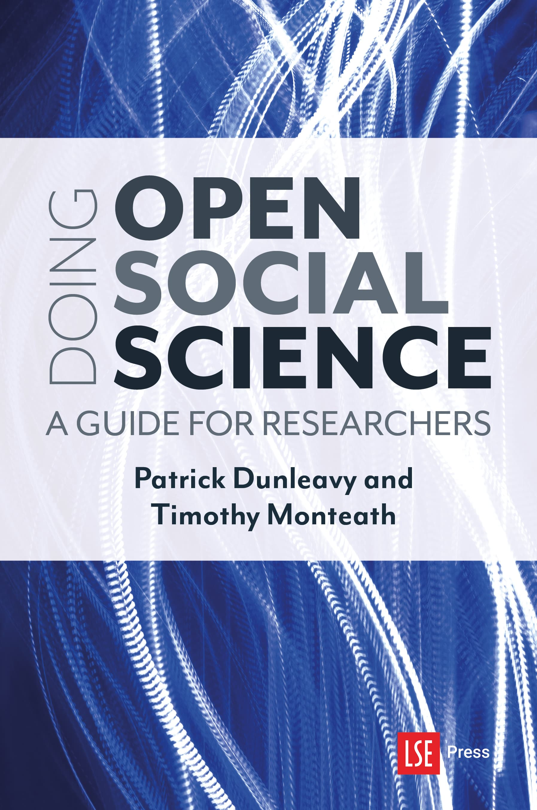
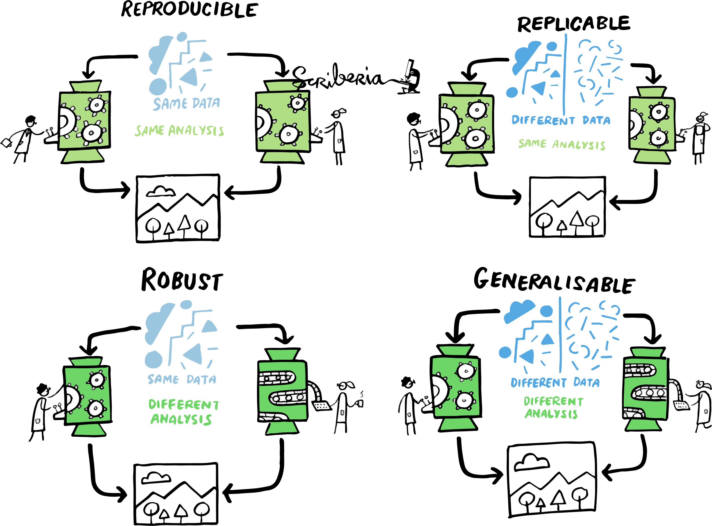
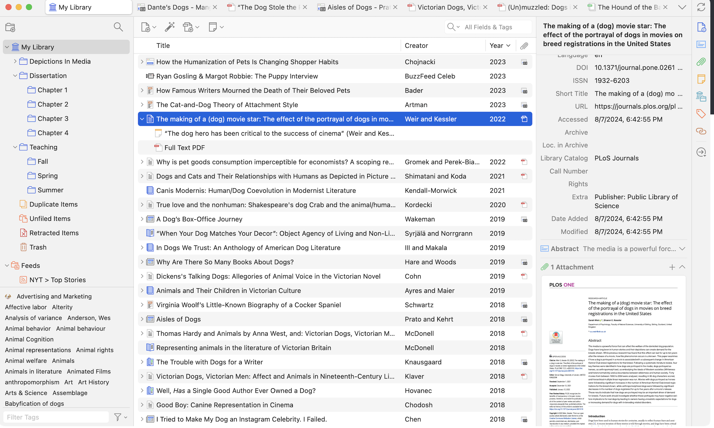
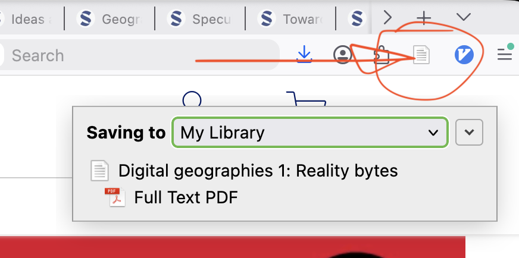
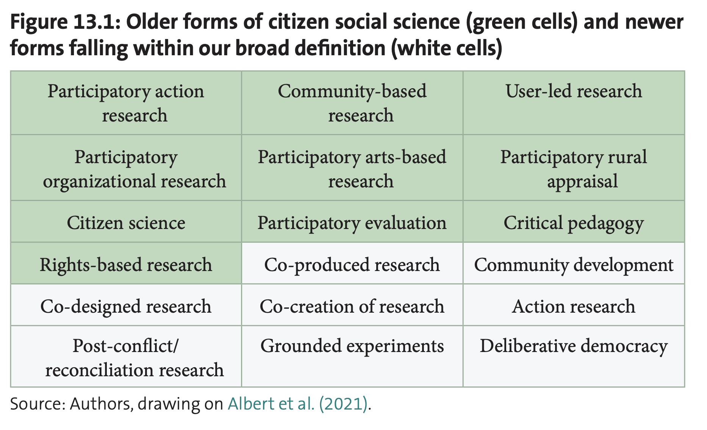
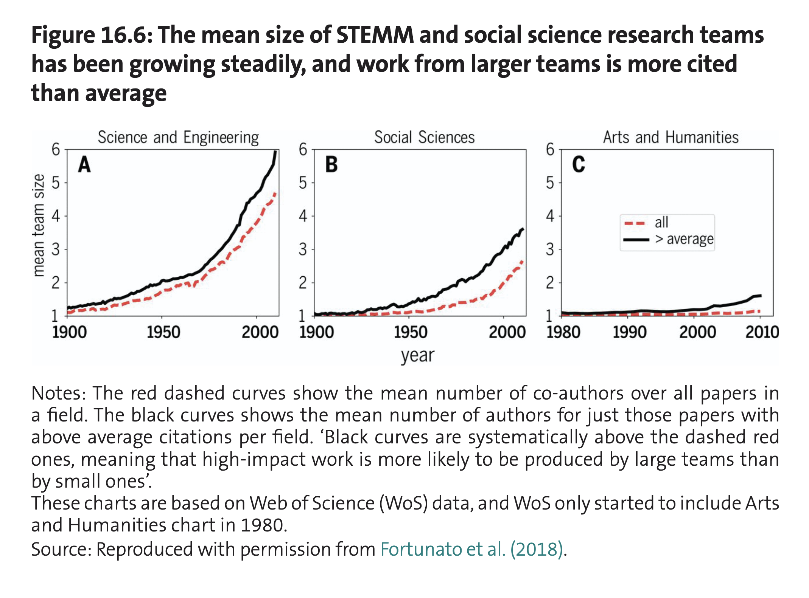

2027-02-10

4 sections, 16 chapters (two additional chapter co-authors)
| School of thought | Central assumption | Involved groups | Central Aim | Tools & Methods |
|---|---|---|---|---|
| Democratic | The access to knowledge is unequally distributed. | Scientists; politicians; citizens | Making knowledge freely available for everyone. | Open Access; intellectual property rights; Open data; Open code |
| Pragmatic | Knowledge-creation could be more efficient if scientists worked together. | Scientists | Opening up the process of knowledge creation. | Wisdom of the crowds; network effects; Open Data; Open Code |
| Infrastructure | Efficient research depends on the available tools and applications. | Scientists & platform providers | Creating openly available platforms; tools and services for scientists. | Collaboration platforms and tools |
| Public | Science needs to be made accessible to the public. | Scientists & citizens | Making science accessible for citizens. | Citizen Science; Science PR; Science Blogging |
| Measurement | Scientific contributions today need alternative impact measurements. | Scientists & politicians | Developing an alternative metric system for scientific impact. | Altmetrics; peer review; citation; impact factors |
(Fecher and Friesike 2013)
The digital revolution has been fundamental in the creative impetus behind and practical operationalization of Open Science
For example the creation of the arXiv pre-print server in 1991 (before the modern web!)
Allowed physicists to at no/low cost to instantly share results;
“It is hard to imagine now, but considerable time and effort was once spent printing, photocopying and posting preprints to a privileged few friends and colleagues, before publication in formal journals”
(Ginsparg 2011)
| Costs (For users) | Code | Restrictions | Motivating Philosophy | |
|---|---|---|---|---|
| Free software | Free to use | Accessible and modifiable | No restrictions on use, derivatives may not be relicensed or made proprietary | Openness is best for software development. As a political principle all software should be free and open |
| Open Source | Free to use | Accessible and modifiable | No restrictions on use, derivatives may be relicensed or made proprietary | Openness is best for software development, often supported by corporate developers |
| ‘Free’ platforms | Free for end-users | No access | Use at the discretion of the owner, no modifications | Users fund the platform company’s business model (via advertising, data capture, future fees) |
| Paywall proprietary software | Paid | No access | Only usable with a paid licence, no modifications allowed | Costs of software drive the provider’s business model |
A Movement of reform focused on;
These are disparate and sometimes contradictory aims
Different disciplines, methodological and epistemic traditions have their own understanding and implementation of these aims
I believe the same is true for all researchers regardless of disciplinary background
Open research should be a question of;
This is to think about research across the life cycle from inception to publication and beyond
Open research is not an end goal, but a process and a practice to be defined and refined




Three areas there are helpful, strong synergies;
However, three major tensions:
